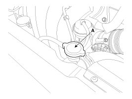
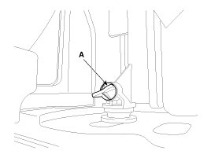

Coolant: Service and Repair
Refilling And Bleeding
WARNING:
Never remove the radiator cap when the engine is hot. Serious scalding could be caused by hot fluid under high pressure escaping from the radiator.
CAUTION:
When pouring engine coolant, be sure to shut the relay box lid and not to let coolant spill on the electrical parts or the paint. If any coolant spills, rinse it off immediately.
1. Make sure the engine and radiator are cool to the touch.
2. Remove radiator cap (A).

3. Remove the under cover.
4. Loosen the drain plug (A) and drain the coolant.

5. Tighten the radiator drain plug securely.
6. After draining engine coolant in the reservoir tank, clean the tank.
7. Fill the radiator with water through the radiator cap and tighten the cap.
NOTE:
To most effectively bleed the air, pour the water slowly and press on the upper/lower radiator hoses.
8. Start the engine and allow to come to normal operating temperature. Wait for the cooling fans to turn on several times. Accelerate the engine to aid in purging trapped air. Shut engine off.
9. Wait until the engine is cool.
10. Repeat step 1 to 9 until the drained water runs clear.
11. Fill fluid mixture with coolant and water (55 - 60%) (except for North America, Europe and China: 45 - 50%) slowly through the radiator cap. Push the upper/lower hoses of the radiator so as bleed air easily.
NOTE:
- Use only genuine antifreeze/coolant.
- For best corrosion protection, the coolant concentration must be maintained year-round at 55% (except for North America, Europe and China: 45%) minimum.
Coolant concentrations less than 55% (except for North America, Europe and China: 45%) may not provide sufficient protection against corrosion or freezing.
- Coolant concentrations greater then 60% will impair cooling efficiency and are not recommended.
CAUTION:
- Do not mix different brands of antifreeze/coolants.
- Do not use additional rust inhibitors or antirust products; they may not be compatible with the coolant.
12. Start the engine and run until coolant circulates.When the cooling fan operates and coolant circulates, refill coolant through the radiator cap.
13. Repeat step 12 until the cooling fan 3 - 5 times and bleed air sufficiently out of the cooling system.
14. Install the radiator cap and fill the reservoir tank to the "MAX" (or "FULL") line with coolant.
15. Run the vehicle under idle until the cooling fan operates 2 - 3 times.
16. Stop the engine and wait coolant gets cool.
17. Repeat step 11 to 16 until the coolant level doesn't fall any more, bleed air out of the cooling system.
NOTE:
It takes time to bleed out all the air in the cooling system. Refill coolant when coolant gets cool completely, then recheck the coolant level in the reservoir tank for 2 - 3 days after replacing coolant.
Coolant capacity:
5.9 - 6.3 L (1.56 - 1.66 U.S.gal., 6.23 - 6.66 U.S.qt., 5.19 - 5.54 lmp.qt.)